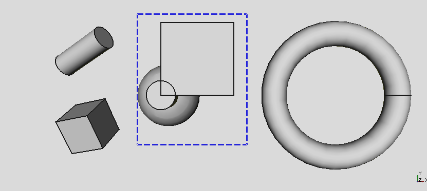

|
| Emplacement du menu |
|---|
| Édition → Sélection par boite |
| Ateliers |
| Tous |
| Raccourci par défaut |
| Majusc+B |
| Voir aussi |
| Fit Selection |
Description
Vous permet de définir une zone rectangulaire
dans la zone de travail et de sélectionner tous les éléments dans cette zone.
Utilisation
- Menu 'Édition cliquer
 Sélection par boite .
Sélection par boite . - Placez le curseur dans la zone de travail, pour fixer le sommet de la zone que vous souhaitez définir,
- Appuyez et maintenez le bouton gauche de la souris, * Faites glisser et créer le rectangle de sélection,
- Sortie. dans l'arborescence du projet, les fonctions sélectionnées sont mises en évidence. La sélection peut être utilisé pour toutes les opérations de changement dans laquelle vous devez sélectionner un objet (couper, supprimer, etc.) ou pour effectuer l'usinage. En plus de l'opération de sélection, cette commande vous permet également de savoir exactement les éléments qui se trouvent dans une zone définie. Pour plus d'informations sur la façon de sélectionner vous pouvez peut aussi vous référer à la sélection Sélection.
En plus de sélectionner d'autres fonctions, vous pouvez:
- Utilisez la CTRL en cliquant sur les fonctions dans le projet ou directement dans la vue,
- Ou dans le menu Édition utiliser la touche
 Sélectionner Tout pour sélectionner l'ensemble du document.
Sélectionner Tout pour sélectionner l'ensemble du document.
Exemple
Créez le rectangle de sélection:
{kind=link}
Les Elements sélectionnés sont mis en évidence, dans la vue et dans la structure:
{kind=link}
Dans la figure ci-dessus, notez les éléments mis en surbrillance dans la structure.
Limitations
Notes